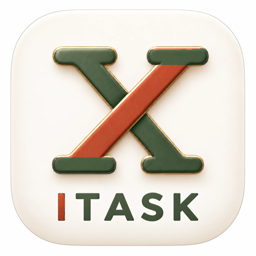

ניהול אתרי בנייה, כבישים ותשתיות – במקום אחד
כניסה לאפליקציהITASK היא אפליקציה למהנדסים, מנהלי עבודה ומנהלי פרויקטים בענף הבנייה והתשתיות. היא מרכזת את העבודה היומיומית באתר: משימות, יומן עבודה, תוכנית עבודה, קבצים, צ'אט פרויקט ובקרה תקציבית – בטלפון (אנדרואיד) ובמחשב.
ITASK is a site-management app for construction, roads and infrastructure projects, developed and operated by Ahmad Juljoly (Israel). Engineers and site managers use it to manage tasks, the daily site diary, work plans, project files and budget control, on Android and on the web.
The ITASK assistant lets site managers send a short written or voice message about what happened on site; the assistant records it in the project's diary, adds tasks and updates the work plan. Messages are exchanged only with registered ITASK users about their own projects.